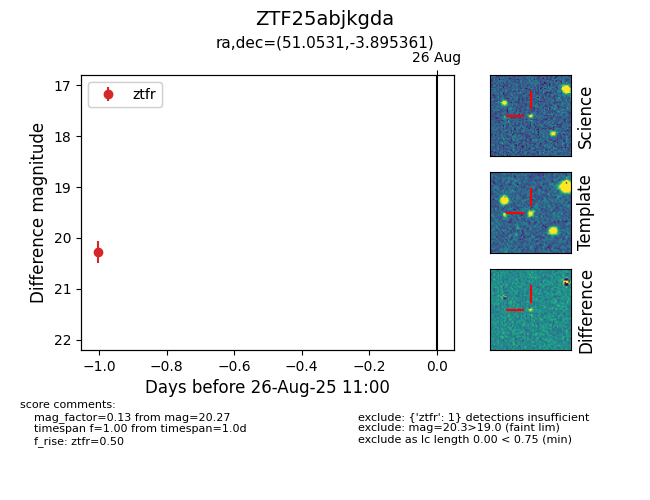

Target ZTF25abjkgda at 2025-08-26 11:00, see:
FINK: fink-portal.org/ZTF25abjkgda
Lasair: lasair-ztf.lsst.ac.uk/objects/ZTF25abjkgda
ALeRCE: alerce.online/object/ZTF25abjkgda
alt names
ZTF25abjkgda (ztf,fink)
coordinates:
equatorial (ra, dec) = (51.0531,-3.89536)
galactic (l, b) = (187.2176,-46.78804)
photometry
last ztfr=20.27
1 ztfr detections
